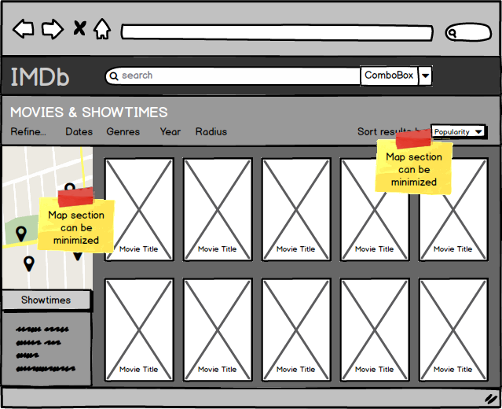

Design Exercises
Condensing IMDb's "Movies" and "Theaters" Tabs
Overview of Design Process
-
Initial Brainstorm/Ideation
- Study and critique current interface.
- Think about posed design problem, record thoughts.
-
Rudimentary (Thumbnail) Sketches
- Try to think broadly about a variety of approaches without becoming too fixated on any specific idea.
-
Secondary/Supplementary Sketch
- Based on initial brainstorm and sketches, refine potential interface ideas.
-
Development of Personas
- Consider different attitudes, different user types
-
Creation of Wireframes
- Use Balsamiq to develop, annotate wireframes
-
Visual Redesign
- Use Sketch to develop refined mockups
-
Self-Critique
- Pros/cons from a UX design perspective
- Pros/cons from an aesthetic perspective
- (Receive feedback, iterate, test, etc)
1. Initial Brainstorm/Ideation
I began by studying the current IMDb site and recording my own complaints and experiences attempting to navigate. I found that the information listed on two tabs in question ("Movies" and "Theaters") was largely redundant. It almost seemed as though IMDb was afraid that people wouldn't find the "Theaters" tab, so they put the same information about theaters in the "Movies" tab. Below are a few screenshots documenting my original brainstorm session. I then attempted to brainstorm different approaches to an improved IMDb interface.
{kind=link}
{kind=link}
2. Rudimentary (Thumbnail) Sketches
(Click for larger view)
{kind=link}
{kind=link}
{kind=link}
{kind=link}
Based on the approaches I came up with during my brainstorm, I sketched a few possible ideas for what an interface might look like. I considered a movie-centric, theater-centric, search-centric, and time-centric approach for the IMDb interface.
3. Secondary/Supplementary Sketch
{kind=link}
Taking into account the types of users that might interact with the interface, I decided to proceed with developing my second sketch. I chose to pursue this idea because I thought it had the most potential to provide useful information about both movies and theaters without being too heavily weighted towards either. The other approaches I considered were more one-dimensional. For instance, sketch 3 (of the previous section) depicts a search-centric approach to a movie database interface - kind of like a search engine. People would be able to find any number of movies by any number of criterias and categories, but it would be quite text-heavy and somewhat dreary looking.
4. Development of Personas
I developed some simple personas to represent a few of the different types of people that might use this interface.
- Middle-schooler Ariana, who often hangs out at the movie theaters on the weekends with her friends. She likes superhero movies, and horror.
- Katie. She just graduated college. She hasn't been to an actual movie theater in a while, but watches a lot of shows on Netflix. She's not really into mainstream movies.
- Tom. He's the father of two elementary school-age kids, so he's pretty concerned about movie ratings. He prefers that one movie theater in his neighborhood with the large, comfy chairs.
- Entertainment journalist Maria. She writes for the local paper and wants to know how movies are doing in the box office.
I considered how each persona might interact with my proposed interface. It would be important for customers like Ariana, Tom, and Maria to be able to see information about each movie. Tom and Ariana would likely want to know which movies were playing at their favorite theaters, and when. On the other hand, the information about theaters shouldn't be too obtrusive on the page, because that might alienate people like Katie (who don't necessarily care too much about showtimes). After all, IMDb is first and foremost a movie database, so there should be a fair amount of spotlight on the movies themselves. I concluded that there should be a balance between the focus on movies and on theaters, but that information about both should be accessible to anyone visiting the page.
5. Creation of Wireframes
{kind=link}
{kind=link}
{kind=link}
{kind=link}
{kind=link}
I used the wireframing software Balsamiq to visualize my "Movies and Showtimes" interface idea for the new page.
In my wireframes, I propose a static secondary header (below the main, darker IMDb header) with options to refine the movie results by dates in theaters, genres, release year, and radius. (A user could, for instance, specify that they only want to see movies that are playing tomorrow in theaters within a 10-mile radius. The movie images would reflect those sarch results.) Furthermore, the right-hand side of the secondary header has a dropdown menu which allows the user to sort the displayed results by popularity, ranking, etc.
Below this secondary header, the window is split into left- and right hand panels. The left-hand panel shows theater and showtime information. A small map panel displays the current location by default and can be adjusted to show a desired location, by using the search bar within the panel. Theaters within the specified radius are marked by pins and hovering over any theater will show basic theater information like name, address, and hours. Clicking on a theater pin will cause the right-hand panel to show which movies are playing at that theater within a default or specified timeframe. Below the map panel is an informational panel that will display information about showtimes and tickets, and a user would be able to buy tickets through that panel. This entire left-hand panel would be both expandable and minimizable, and would stick to the left side.
The right-hand panel would be dedicated to displaying movie poster graphics, because I think visuals play a large part in considering and searching for movies. Hovering over a movie would, like the current IMDb interface, display a sort of tooltip that contains general information about the movie. Furthermore, clicking a movie would cause the map in the left-hand panel to display theaters within a default/specified radius that are scheduled to show the clicked movie. This action would also take the user to a page that displays more in-depth information about the movie (like actors, ratings, plot summary, etc.)
6. Visual Redesign

{kind=link}
The movie grid would be responsive to resized windows.
7. Self-Critique
From a UX perspective:
I think much of the redundancy that plagues the current interface has been resolved, to some extent, by combining the two tabs. (I remember finding it absurd that in the current IMDb "Theaters" tab, the same movies kept appearing over and over again for every theater that they were being played at.) Things are less explicitly labelled. This might be confusing to some people who are unfamiliar with digital interactions in general. For instance, my interface would allow each panel/div other than the headers to be scrollable, independent of the other panels. I made this choice because I was frustrated with the scrolling functions of the current IMDb page. (Nothing is sticky, users have to keep scrolling back up to navigate or adjust results.) However, this might not be immediately apparent to someone who first visits the page. Furthermore, people who have become accustomed to using the IMDb site would likely voice a certain amount of resistance to any sort of sudden change. Finally, I think making the page responsive to different screen and window sizes would make the viewing experience much more enjoyable to anyone visiting the site from a tablet device.
From an aesthetic perspective:
The overall impression of the page is much darker. I personally don't think that this is a bad thing; it's somewhat evokative of the pitch-darkness of movie theaters and is relatively professional looking. However, I worry that there isn't enough contrast in between the "Refine Search" option text and its background. I think that my visual design is less cluttered overall - the current page has many, many levels of typographic hierarchy, which I attempted to condense into a fewer number.
Thank you for taking the time to read this! I very much enjoyed doing these exercises.